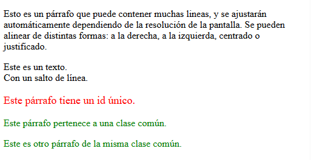
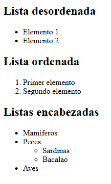
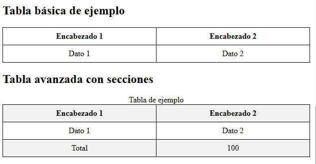
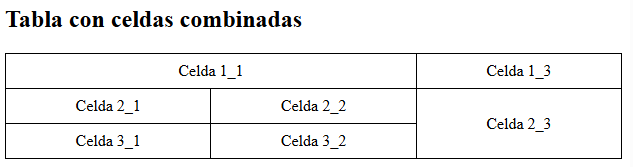
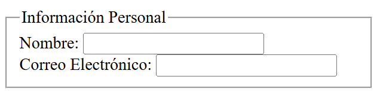
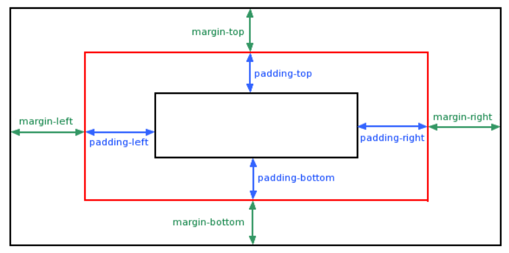

HTML (HyperText Markup Language) es el lenguaje fundamental para estructurar el contenido de cualquier página web, usando etiquetas para organizar textos, imágenes, enlaces y otros elementos, formando el esqueleto que los navegadores interpretan para mostrar la información en internet, siendo la base junto con CSS.
El principio esencial del lenguaje HTML es el uso de las etiquetas (tags). Funcionan de la siguiente manera:
<XXX> Este es el inicio de una etiqueta.
</XXX> Este es el cierre de una etiqueta.
Las letras de la etiqueta pueden estar en mayúsculas o minúsculas, indiferentemente.
Lo que haya entre ambas etiquetas estará afectado por ellas. Por ejemplo, todo el documento HTML debe estar entre las etiquetas <HTML> y </HTML>:
<html> [Todo el documento] </html>
Un documento HTML en sí está dividido en dos zonas principales:
• La cabecera, comprendida entre las etiquetas <HEAD> y </HEAD>
• El cuerpo, comprendido entre las etiquetas <BODY> y </BODY>
Dentro de la cabecera hay información del documento, que no se ve en la pantalla principal del navegador que es utilizado para visualizar el documento HTML, principalmente la información encontrada en la cabecera es el título del documento,comprendido entre las etiquetas <TITLE> y </TITLE>. El título debe ser breve y descriptivo de su contenido, pues será lo que vean los demás cuando añadan nuestra página a su lista de favoritos (o bookmark).
Dentro del cuerpo está todo lo que queremos que aparezca en la pantalla principal (texto, imágenes, etc.). Por tanto, la estructura de un documento HTML queda de esta manera:
<!DOCTYPE html>
<html lang="es">
<head>
<meta charset="UTF-8">
<title>Mi primera página</title>
</head>
<body>
<h1>¡Hola, mundo!</h1>
<p>Bienvenidos a la web.</p>
</body>
</html>
<!DOCTYPE html>: Declara el tipo de documento.
<html>: Contiene todo el documento.
<head>: Información sobre la página (no visible).
<body>: Contenido visible.
Las etiquetas pueden estar anidadas, es decir, unas dentro de otras, pero siempre deben cerrarse en el orden inverso al que se abren.
<h1> Primera <em>Página</em> </h1>
<p> El <strong>metro</strong> es una medida de longitud</p>
HTML5
HTML5 es la versión más reciente de HTML, que introduce nuevas etiquetas y características para mejorar la estructura y funcionalidad de las páginas web.
La estructura básica de un documento HTML5 es similar a la mostrada anteriormente, pero incluye algunas mejoras como la declaración del tipo de documento y el uso de etiquetas semánticas. Las etiquetas semánticas como <main>, <header>, <aside>,<footer>, <nav>, <section> y <article> ayudan a definir claramente las diferentes partes de una página web, mejorando la accesibilidad y el SEO.
<!DOCTYPE html>
<html lang="es">
<head>
<meta charset="UTF-8">
<meta name="viewport" content="width=device-width, initial-scale=1.0">
<title>Mi primera página HTML5</title>
</head>
<body>
<header>
<h1>¡Hola, mundo!</h1>
</header>
<nav>
<!-- Menú de navegación -->
</nav>
<main>
<section> <!-- Sección temática -->
<article>
<!-- Contenido independiente -->
</article>
</section>
<aside>
<!-- Barra lateral, anuncios, etc. -->
</aside>
</main>
<footer>
<!-- Pie de página -->
</footer>
</body>
</html>
Se puede encontrar varios section y article en una misma página, cada uno con su propio contenido. Section indica una sección temática, mientras que article representa un contenido independiente dentro de esa sección.
Solo debe haber un main por página, que contiene el contenido principal, y un header y footer por página, que contienen la cabecera y el pie de página respectivamente.
Cuando escribimos en el documento el texto que queremos que aparezca en la pantalla, veremos que éste se acomoda a ella, sin que tengamos que pulsar el retorno del carro.
Si queremos separar el texto en distintos párrafos debemos usar la etiqueta <P>, que tiene su correspondiente etiqueta de cierre </P>.
Párrafos
<p>Esto es un párrafo que puede contener muchas lineas,
y se ajustarán automáticamente dependiendo
de la resolución de la pantalla.
Se pueden alinear de distintas formas: a la derecha,
a la izquierda, centrado o justificado.</p>
Encabezados
<h1>Encabezado 1</h1>
<h2>Encabezado 2</h2>
<h3>Encabezado 3</h3>
<h4>Encabezado 4</h4>
<h5>Encabezado 5</h5>
<h6>Encabezado 6</h6>
Saltos de línea
<p>Este es un texto.<br>Con un salto de línea.</p>
Otros elementos de texto
La etiqueta <HR> se utiliza para insertar una línea horizontal que sirve para separar secciones de contenido.
La etiqueta <BLOCKQUOTE> y </BLOCKQUOTE> se utiliza para destacar una cita textual dentro del texto general. Deja márgenes a ambos lados, por eso se usa para poner sangrías.
En las fórmulas matemáticas puede interesar poder escribir índices y subíndices, que
se consiguen con las etiquetas <SUP> </SUP> y <SUB> </SUB> respectivamente.
Los comentarios en HTML se escriben entre las etiquetas . El contenido de los comentarios no se muestra en el navegador.
<!-- Los comentarios son útiles para dejar notas en el código -->
<p>Esto es un párrafo.</p>
CSS (Cascading Style Sheets) es un lenguaje de estilos que se utiliza para describir la presentación de un documento HTML. Permite separar el contenido (HTML) de la presentación (CSS), facilitando el mantenimiento y la flexibilidad del diseño web.
En cascada significa que si hay varios estilos aplicados a un mismo elemento, se aplican en un orden de prioridad. Además, los estilos pueden heredarse de elementos padres a hijos. El valor de las propiedades CSS se heredan a las etiquetas anidadas, es decir, a las
que se encuentren dentro.
Se puede aplicar CSS de tres maneras diferentes. En el caso de estar las tres, prevalece el orden: en línea > interno > externo.
Uso en línea: CSS se puede usar dentro del atributo style de una etiqueta.
<p style="color: blue; font-size: 20px;">
Este es un texto azul.</p>
Esta forma es útil para aplicar estilos rápidos y específicos a un solo elemento, pero no es recomendable mezclar contenido y presentación.
Uso interno: CSS se puede usar dentro de la etiqueta <style> en el <head>.
<!DOCTYPE html>
<html lang="es">
<head>
<meta charset="UTF-8">
<title>Mi primera página</title>
<style>
p {
color: blue;
font-size: 20px;
}
</style>
</head>
<body>
<h1>¡Hola, mundo!</h1>
<p>Bienvenidos a la web.</p>
</body>
</html>
Integración externa (FORMA RECOMENDADA): Se puede usar un archivo CSS externo:
<link rel="stylesheet" href="estilo.css">
En estilo.css:
p {
/** Esto es un comentario en CSS **/
color: blue;
font-size: 20px;
}
Para usar CSS interno o externo, ponemos al inicio el elemento al que queremos dar estilo, seguido de las propiedades CSS entre llaves {}.
Si queremos dar estilo a todos los párrafos <p> del documento, lo haríamos así:
p {
color: blue;
font-size: 20px;
}
Podemos hacer lo mismo con cualquier otra etiqueta HTML, como por ejemplo los encabezados <h1>.
Si queremos dar estilo a un elemento único (no se debe repetir el id), le asignamos un id. Por ejemplo, si queremos dar estilo solo a un párrafo con id="especial":
<p id="especial">Este es un texto especial.</p>
#especial {
color: blue;
font-size: 20px;
}
Si queremos dar estilo a varios elementos lo haremos a través de una clase. Por ejemplo, si queremos dar estilo a todos los párrafos con class="resaltado":
<p class="resaltado">Este es un texto resaltado.</p>
<p> Otro párrafo normal.</p>
<p class="resaltado">Este es otro texto resaltado.</p>
.resaltado {
color: blue;
font-size: 20px;
}
El ejemplo más aclarador para entender la diferencia entre id y class es el siguiente:
<p id="unico">Este párrafo tiene un id único.</p>
<p class="comun">Este párrafo pertenece a una clase común.</p>
<p class="comun">Este es otro párrafo de la misma clase común.</p>
#unico {
color: red;
font-size: 18px;
}
.comun {
color: green;
font-size: 16px;
}
El HTML y CSS visto hasta ahora queda de la siguiente manera:

Estilos en textos usando CSS
Las etiquetas <b> y <i> están obsoletas en HTML5, por lo que es mejor usar CSS para aplicar negritas y cursivas, preferiblemente en un archivo CSS externo.
<p style="font-weight: bold;">Texto en negrita</p>
<p style="font-style: italic;">Texto en cursiva</p>
/* Negrita */
p {
font-weight: bold;
}
Las siguientes son otras propiedades de CSS para dar formato al texto:
p {
/* Subrayado */
text-decoration: underline;
/* Alineación de texto */
text-align: center; /* center, right, left, justify */
/* Espaciado entre letras */
letter-spacing: 2px;
/* Espaciado entre líneas */
line-height: 2;
/* Colores de texto */
color: red;
/* También se pueden usar códigos hexadecimales o RGB */
color: #FF0000;
color: rgb(255, 0, 0);
/* Fuentes */
font-family: Arial, sans-serif;
/* Tamaño de texto */
font-size: 20px;
/* Texto en mayúsculas, minúsculas y capitalizado */
text-transform: uppercase; /* lowercase, capitalize */
}
A menudo nos interesará presentar las cosas en forma de listas. Podemos escoger entre
tres tipos distintos:
• Listas desordenadas (no numeradas)
• Listas ordenadas (numeradas)
• Listas de definición
Lista desordenada (símbolos: puntos, círculos)
<ul>
<li>Elemento 1</li>
<li>Elemento 2</li>
</ul>
Lista ordenada (números)
Las listas ordenadas (Ordered Lists) sirven para presentar elementos en un orden determinado. La diferencia es que aparecerá automáticamente un número correlativo para cada elemento.
<ol>
<li>Primer elemento</li>
<li>Segundo elemento</li>
</ol>
Se puede anidar una lista dentro de otra. Por ejemplo:
<ul>
<li> Mamíferos </li>
<li> Peces </li>
<ul>
<li> Sardinas </li>
<li> Bacalao </li>
</ul>
<li> Aves </li>
</ul>
En el navegador se verá así:

Estilos para listas
ul {
list-style-type: circle; /* square, disc, none */
}
ol {
list-style-type: decimal; /* upper-roman, lower-alpha, none */
}
Algunos elementos como las imágenes y los enlaces requieren cierta información adicional para estar completamente definidos.
La etiqueta <img> por ejemplo se emplea para incluir una imagen en una página. Utilizando sólo la etiqueta <img> no es posible establecer la dirección donde se encuentra el archivo de la imagen a mostrar.
La solución consiste en personalizar las etiquetas HTML mediante cierta información adicional llamada atributos.
Las etiquetas permiten personalizarse con atributos con la siguiente sintaxis según sea
una etiqueta general o autocerrada:
<etiqueta atributo="valor">contenido</etiqueta>
<etiqueta atributo="valor" />
En el ejemplo de la imagen podría ser:
<img src="imagen.jpg" />
Los atributos proporcionan información adicional sobre los elementos HTML y se incluyen dentro de la etiqueta de apertura. Algunos atributos comunes son:
<!-- Ejemplo de uso del atributo id -->
<p id="miParrafo">Este es un párrafo con un id único.</p>
<!-- **class**: Clase o categoría para agrupar elementos. -->
<p class="resaltado">Este es un párrafo resaltado.</p>
<!-- **src**: Fuente de una imagen o recurso. -->
<img src="imagen.jpg" alt="Descripción de la imagen">
<!-- **href**: Enlace a otra página o recurso. -->
<a href="https://www.ejemplo.com">Visitar Ejemplo</a>
Con IMG SRC (image source, fuente de la imagen) se indica que se quiere cargar una imagen llamada, como está indicado, imagen.jpg (o el nombre que tenga).
Dentro de la etiqueta se pueden añadir otros atributos, como TITLE que aparecerán al
pasar por encima de la foto con el ratón.
Se debe incluir también el atributo ALT (texto alternativo) para describir la imagen, lo cual es útil para la accesibilidad y en caso de que la imagen no se cargue.
Insertar imágenes
<img src="imagen.jpg" alt="Descripción de la imagen" style="width: 200px;">
Estilos para imágenes
img {
width: 200px; /* Ancho */
height: auto; /* Alto automático para mantener proporción */
border: 2px solid black; /* Borde */
border-radius: 8px; /* Bordes redondeados */
box-shadow: 2px 2px 5px rgba(0, 0, 0, 0.5); /* Sombra */
}
Si la imagen no se encuentra en la misma carpeta que el archivo HTML, debemos especificar la ruta relativa correcta en el atributo src.
Por ejemplo, si la imagen está en una carpeta llamada "imagenes", y el HMTL está dentro de otra carpeta "HTML" en la misma carpeta principal, la ruta sería:
<img src="../imagenes/imagen.jpg" alt="Descripción de la imagen">
La característica que más ha influido en el espectacular éxito de la Web ha sido, aparte de su carácter multimedia, la posibilidad de unir los distintos documentos repartidos por todo el mundo por medio de enlaces hipertexto.
En general, los enlaces tienen la siguiente estructura:
<a href="[URL]" target="[lugar donde se abre]"> [Texto a visualizar] </a>
Donde [URL] es el destino del enlace (Observe las comillas) y [Texto a visualizar] es el texto indicativo en la pantalla del enlace (con un color especial y generalmente subrayado)
El atributo target puede tener el valor de "_blank" que indica abrir otra pestaña o "_self" que abre el enlace en la misma ventana
Tipos de enlaces
<a href="https://www.ejemplo.com" target="_blank">Visitar Ejemplo</a>
<a href="#seccion1">Ir a Sección 1</a>
...
<h2 id="seccion1">Sección 1</h2>
<a href="../../micarpeta/pagina2.html">Ir a Página 2</a>
En este último ejemplo, se sube dos niveles en la jerarquía de carpetas y luego se accede a la carpeta "micarpeta" para abrir "pagina2.html".
Se puede usar la combinación de estas técnicas para crear enlaces complejos dentro de un sitio web.
A menudo es necesario agrupar varios elementos HTML para aplicarles estilos comunes o para organizarlos mejor. Para ello, se utilizan las etiquetas <div> y <span>.
Etiqueta <div>
La etiqueta <div> se utiliza para agrupar bloques de contenido. Es un contenedor de nivel de bloque que puede contener otros elementos HTML, como párrafos, imágenes, listas, etc. Crea un salto de línea antes y después del contenido que agrupa.
<div class="contenedor">
<h2>Encabezado dentro de un div</h2>
<!-- DIVISIONES -->
<div class="noticia">
<p>Párrafo 1</p>
</div>
<div class="noticia">
<p>Párrafo 2</p>
</div>
</div>
Etiqueta <span>
La etiqueta <span> se utiliza para agrupar texto o elementos en línea. Es un contenedor de nivel en línea que no crea un salto de línea, y se usa principalmente para aplicar estilos a partes específicas del texto.
<p>Este es un texto con una <span class="resaltado">palabra resaltada</span> dentro de un párrafo.</p>
Estructura básica de una tabla
<table> <!-- Inicio de la Tabla -->
<tr> <!-- Fila -->
<th>Encabezado 1</th> <!-- Encabezado -->
<th>Encabezado 2</th>
</tr>
<tr>
<td>Dato 1</td> <!-- Celda -->
<td>Dato 2</td>
</tr>
</table> <!-- Fin de la Tabla -->
Estructura avanzada de una tabla
<table> <!-- Inicio de la Tabla -->
<caption>Tabla de ejemplo</caption> <!-- Título de la tabla -->
<thead> <!-- Encabezado de la tabla -->
<tr>
<th>Encabezado 1</th>
<th>Encabezado 2</th>
</tr>
</thead>
<tbody> <!-- Cuerpo de la tabla -->
<tr>
<td>Dato 1</td>
<td>Dato 2</td>
</tr>
</tbody>
<tfoot> <!-- Pie de la tabla -->
<tr>
<td>Total</td>
<td>100</td>
</tr>
</tfoot>
</table>
Las etiquetas <theader>, <tbody> y <tfoot> ayudan a organizar mejor la tabla, especialmente para tablas grandes o complejas. Y para añadir diferentes estilos a cada sección.
Estilos para tablas
table {
width: 100%; /** Ancho de la tabla **/
border-collapse: collapse; /** Elimina espacios entre celdas **/
}
th, td {
border: 1px solid black; /** Bordes **/
padding: 8px; /** Espaciado interno **/
margin: 5px; /** Margen externo **/
text-align: center; /** Alineación del texto **/
}
/** Estilos para theader, tbody y tfoot */
thead, tfoot {
background-color: #f2f2f2;
}
Queda así:

Combinación de celdas con Colspan y rowspan
Para combinar celdas en una tabla, se utilizan los atributos colspan y rowspan dentro de las etiquetas <td> o <th>.
colspan: Número de columnas que ocupa.
rowspan: Número de filas (rows) que ocupa.
<table>
<tr>
<td colspan="2">Celda 1_1</td>
<!-- <td>Celda 1_2</td> no hace falta
porque la primera ocupa 2 columnas -->
<td>Celda 1_3</td>
</tr>
<tr>
<td>Celda 2_1</td>
<td>Celda 2_2</td>
<td rowspan="2">Celda 2_3</td>
</tr>
<tr>
<td>Celda 3_1</td>
<td>Celda 3_2</td>
<!-- <td>Celda 3_3</td> no hace falta
porque la anterior ocupa 2 filas -->
</tr>
</table>
Quedaría así:

Los formularios HTML son uno de los puntos principales de interacción entre un usuario y un sitio web o aplicación. Ellos permiten a los usuarios enviar información a un sitio web. La mayor parte de las veces se envía información a un servidor web, pero la pagina web también puede interceptarla para usar los datos introducidos.
Un formulario HTML está hecho de uno o más campos de entrada. Estos pueden ser campos de texto (de una línea o multilínea), cajas de selección, botones, checkboxes, o botones de radio. La mayoría del tiempo, estos campos se sitúan junto a una etiqueta (label) que describe su propósito.
Cuando usamos un formulario, y pulsamos en el botón de enviar los datos, se produce
una comunicación con el servidor:
La sintaxis es:
<form action="[URL del servidor]"
method="[GET o POST]"
enctype="[tipo de codificación]">
[CONTENIDO DEL FORMULARIO]
<button type="submit">Enviar</button>
</form>
Los atributos de la etiqueta <form> sirven para :
• action: indica el lugar donde se enviarán los datos recogidos en el formulario. Si el valor del atributo es action="#", se enviará a la misma página que contiene el formulario.
• method: define cómo serán enviados los datos. Las formas más comunes son GET y POST. El method="GET" envía los datos como si se añadieran a la URL, mientras que con method="POST" se envían dentro del body de la solicitud al servidor.
• enctype: especifica el valor del tipo de contenido. El valor por defecto es "application/x-www-form-urlencoded" pero cuando añadimos entradas de ficheros deberemos indicar el valor "multipart/form-data" para que lo separe en varias partes.
Campos básicos de un formulario
INPUT
<input
type="text" <!-- Tipo de campo: text, password, email, number,
date, file, checkbox, radio, submit, reset -->
id="nombre" <!-- Identificador del campo -->
name="nombre" <!-- Nombre del campo -->
value="Reis" <!-- Valor por defecto del campo (menos en button) -->
maxlength="50" <!-- Máximo número de caracteres -->
title="Introduce tu nombre" <!-- Texto a mostrar al pasar el ratón por encima -->
placeholder="Escribe tu nombre aquí" <!-- Mensaje interior en el campo -->
readonly <!-- Indica que el campo es de solo lectura -->
required <!-- Indica que el campo es obligatorio -->
/>
TEXTAREA
<textarea
rows="10" <!-- Número de filas visibles -->
id="comentarios" <!-- Identificador del campo -->
name="comentarios" <!-- Nombre del campo -->
maxlength="500" <!-- Máximo número de caracteres -->
title="Escribe tus comentarios aquí" <!-- Texto a mostrar al pasar el ratón por encima -->
placeholder="Comentarios..." <!-- Mensaje interior en el campo -->
readonly <!-- Indica que el campo es de solo lectura -->
required <!-- Indica que el campo es obligatorio --> >Este es el texto por defecto del área de texto
</textarea>
SELECT
<select
id="provincia"
name="provincia"
title="Selecciona tu provincia"
>
<option value="[valor de la opción 1]" selected>
[Texto de la opción 1]
</option>
<option value="[valor de la opción 2]">
[Texto de la opción 2]
</option>
</select>
Selected indica la opción que aparecerá seleccionada por defecto.
RADIO
Se agrupan varios botones de radio con el mismo name para que solo se pueda seleccionar uno de ellos.
<input type="radio" id="idradio1" name="btnRadio" checked>Opción 1
<input type="radio" id="idradio2" name="btnRadio">Opción 2
<input type="radio" id="idradio3" name="btnRadio">Opción 3
CHECKBOX
Los checkboxes permiten seleccionar varias opciones a la vez.
<input type="checkbox" id="idcheck1" name="chkbox1" checked>Opción A
<input type="checkbox" id="idcheck2" name="chkbox2">Opción B
<input type="checkbox" id="idcheck3" name="chkbox3">Opción
Esta etiqueta también puede llevar el atributo checked para indicar que aparezca marcada por defecto.
FILE
<input type="file" id="idFile" name="btnFile">
BUTTON
<button type="submit">Enviar</button>
<button type="reset">Restablecer</button>
Submit envía el formulario y reset restablece los valores por defecto.
También se puede usar input type="submit" y input type="reset".
<input type="submit"
id="idSubmit" name="btnSubmit"
value="Enviar">
En este botón, el atributo value contiene el texto que aparece en el botón.
LABEL
La etiqueta <label> se utiliza para definir etiquetas para los elementos de formulario. Asociar una etiqueta a un campo mejora la accesibilidad y la usabilidad del formulario.
<label for="nombre">Nombre:</label>
<input type="text" id="nombre" name="nombre">
OTROS
Otros tipos de input son: color, date, datetime-local, email, month, number, range, search, tel, time, url y week.
FIELDSET y LEGEND
La etiqueta <fieldset> se utiliza para agrupar elementos relacionados dentro de un formulario, creando una sección visualmente separada. La etiqueta <legend> se utiliza para proporcionar un título o descripción para el grupo de campos dentro del <fieldset>.
<fieldset>
<legend>Información Personal</legend>
<label for="nombre">Nombre:</label>
<input type="text" id="nombre" name="nombre" required>
<br>
<label for="email">Correo Electrónico:</label>
<input type="email" id="email" name="email" required>
</fieldset>
Quedaría así:

Bordes y sombras
div {
/* Equivalente a border-width, border-style, border-color */
border: 2px solid #333;
/* Tipos de borde: solid, dashed, dotted, double, groove, ridge, inset, outset, none */
border-radius: 8px; /* Bordes redondeados */
box-shadow: 2px 2px 5px rgba(0, 0, 0, 0.5);
}
Ajustes de la posición: Margen y relleno
A través de las propiedades margin y padding podemos indicar a una etiqueta el espacio que queremos por fuera y el espacio interno.

div {
margin: 10px;
padding: 10px;
}
Podemos utilizar propiedades individuales como las indicadas en la imagen anterior de margin-top, margin-left, padding-bottom ,… o bien usar margin y padding con varios parámetros.
Lo indicaremos con 4 parámetros en el orden de las agujas del reloj: arriba, derecha, abajo, izquierda. Por ejemplo:
margin: 10px 20px 30px 40px;
La propiedad anterior sería equivalente a:
margin-top: 10px;
margin-right: 20px;
margin-bottom: 30px;
margin-left: 40px;
Si usamos sólo dos parámetros:
margin: 10px 20px;
La propiedad anterior asignaría el primer valor a arriba y abajo, y el segundo a derecha e izquierda.
Si usamos sólo un parámetro la propiedad anterior asignaría el valor a todos los márgenes.
El valor auto calcula el margin necesario para completar a izquierda y derecha el 100% de su contenedor. Si tenemos un div que tiene un "width:70%" si indicamos un "margin:0 auto", como nos falta un 30% para cubiri el 100%, realmente le estamos diciendo un porcentaje de 15% a cada lado.
margin-top: 0px;
margin-right: 15%;
margin-bottom: 0px;
margin-left: 15%;
Float
Float es una propiedad CSS que permite posicionar elementos a la izquierda o derecha dentro de su contenedor, haciendo que el texto u otros elementos fluyan alrededor de ellos.
img {
/* Puede ser left o right */
float: left;
}
CSS combinando selectores
Se pueden combinar selectores para aplicar estilos más específicos. Por ejemplo:
/* Selecciona todos los párrafos dentro de un div con clase "contenedor" */
.contenedor p {
color: blue;
}
/* Selecciona el párrafo con id "especial" dentro de un div */
div #especial {
font-weight: bold;
}
/* Etiqueta etiqueta: selecciona todas las etiquetas p dentro de div */
div p {
font-size: 18px;
}
/* Etiqueta.clase: selecciona todas las etiquetas de la clase resaltado dentro de p */
p.resaltado {
text-decoration: underline;
}
/* #id.etiqueta: selecciona una etiqueta p dentro de una etiqueta con un id especial */
#especial p {
color: red;
}
Pseudo-clases
Las pseudo-clases permiten aplicar estilos a elementos en estados específicos, como cuando se pasa el ratón por encima o cuando un enlace ha sido visitado.
a:hover {
color: red; /* Cambia el color al pasar el ratón */
}
a:visited {
color: purple; /* Color para enlaces visitados */
}
a:active {
color: green; /* Color cuando el enlace está siendo clicado */
}
a: link {
color: blue; /* Color para enlaces no visitados */
}